Trending Crypto Report for 22/05/2022 06:23:06
TERRA-LUNA
Name: Terra
Terra
Description:
Terra is a decentralized financial payment network that rebuilds the traditional payment stack on the blockchain. Luna is the reserve currency of the Terra platform. It has three core functions: i) mine Terra transactions through staking, ii) ensure the price stability of Terra stablecoins and iii) provide incentives for the platform’s blockchain validators.
Categories:
Cosmos Ecosystem, Terra Ecosystem, Fantom Ecosystem, Decentralized Finance (DeFi), Smart Contract Platform
Public Notice:
In light of the recent de-pegging incident of UST, Luna price and liquidity have become unstable across exchanges. To keep up with the latest status of the Terra chain, please refer to https://twitter.com/terra_money
Links:
- Home Page: https://terra.money
- Blockchain Site: https://finder.terra.money/,https://ftmscan.com/token/0x95dd59343a893637be1c3228060ee6afbf6f0730,https://terra.stake.id/,https://hubble.figment.io/terra/chains/columbus-5,https://scan.meter.io/address/0x95dd59343a893637be1c3228060ee6afbf6f0730,https://ftmscan.com/address/0x95dd59343a893637be1c3228060ee6afbf6f0730,https://explorer.energi.network/token/0xb2b1f16b7bb342adcb57671f5aba0ae160196b75,,,
- Official Forum URLs:
- Chat URLs: https://discord.com/invite/terra-money
Social Media:
- Twitter: terra_money
- Facebook:
- Telegram: TerraLunaChat
Sentiment:
- Votes Up: 59.97
- Votes Down: 40.03
Ranks:
- Market Cap Rank: 63
- Gecko Rank: 128
- Gecko Score: 42.611
- Community Score: 53.949
- Public Interest Score: 0.06
Day Plot:
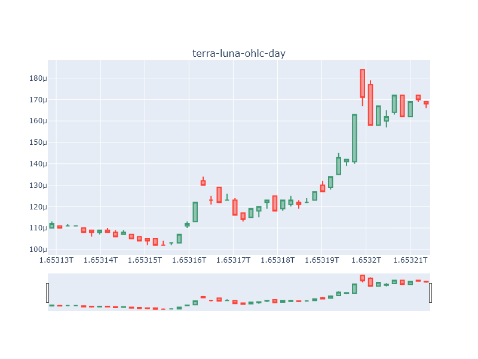
Month Plot:
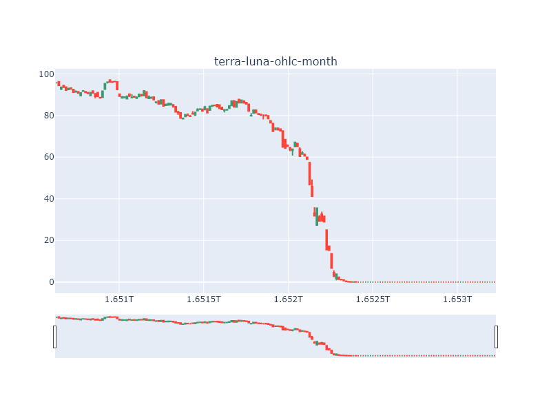
TERRAUSD
Name: TerraUSD
TerraUSD
Description:
Terra USD (UST) is an algorithmic stablecoin that is pegged to the US
Categories:
Seigniorage, Terra Ecosystem, USD Stablecoin, Stablecoins
Public Notice:
UST has remained de-pegged from the US dollar since 9th May 2022.
Links:
- Home Page: https://terra.money
- Blockchain Site: https://finder.terra.money,,,,,,,,,
- Official Forum URLs:
- Chat URLs: http://discord.gg/terra-money
Social Media:
- Twitter: terra_money
- Facebook:
- Telegram:
Sentiment:
- Votes Up: 41.47
- Votes Down: 58.53
Ranks:
- Market Cap Rank: 84
- Gecko Rank: 358
- Gecko Score: 31.654
- Community Score: 12.257
- Public Interest Score: 0.06
Day Plot:
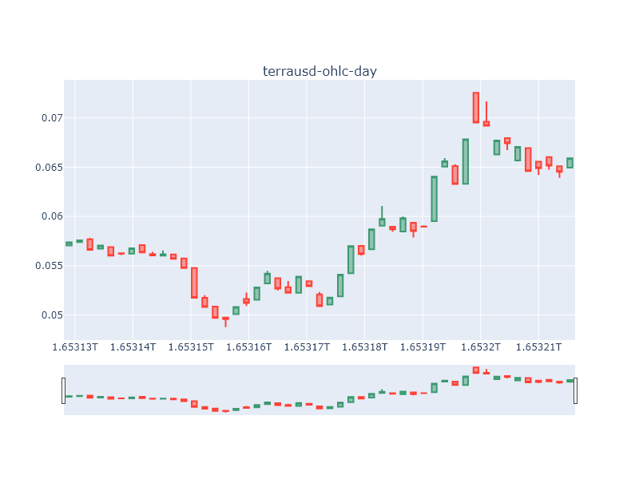
Month Plot:
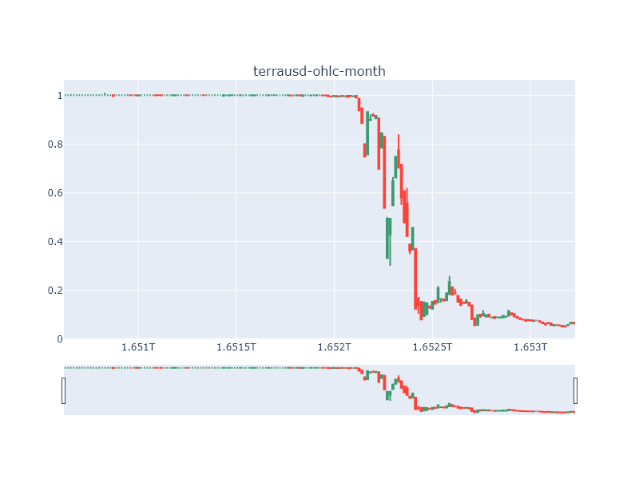
FANTOM
Name: Fantom
Fantom
Description:
FANTOM is a new DAG based Smart Contract platform that intends to solve the scalability issues of existing public distributed ledger technologies.
The platform intends to distinguish itself from the traditional block ledger-based storage infrastructure by attempting to employ an improved version of existing DAG-based pro-tocols. The FANTOM platform adopts a new protocol known as the “Lachesis Protocol” to maintain consensus. This protocol is intended to be integrated into the Fantom OPERA Chain. The aim is to allow applications built on top of the FANTOM OPERA Chain to enjoy instant transactions and near zero transaction costs for all users.
The mission of FANTOM is to provide compatibility between all transaction bodies around the world, and create an ecosystem which allows real-time transactions and data sharing with low cost.
Categories:
Fantom Ecosystem, Infrastructure, Smart Contract Platform, Binance Smart Chain Ecosystem
Public Notice:
None
Links:
- Home Page: http://fantom.foundation
- Blockchain Site: http://ftmscan.com/,https://etherscan.io/token/0x4e15361fd6b4bb609fa63c81a2be19d873717870,https://ethplorer.io/address/0x4e15361fd6b4bb609fa63c81a2be19d873717870,https://explorer.fantom.network/,https://bscscan.com/token/0xAD29AbB318791D579433D831ed122aFeAf29dcfe,https://moonriver.moonscan.io/token/0xad12dab5959f30b9ff3c2d6709f53c335dc39908,https://explorer-mainnet-cardano-evm.c1.milkomeda.com/token/,https://explorer-mainnet-cardano-evm.c1.milkomeda.com/token/0x332730a4f6e03d9c55829435f10360e13cfa41ff,https://explorer.energi.network/token/0xafdf614ea3e1c0d93730f6fc31f23ba30f17ecea,
- Official Forum URLs: https://www.weibo.com/FantomFoundation
- Chat URLs: https://open.kakao.com/o/gkxyDLKhttp://chat.fantom.network/https://t.me/fantom_korean
Social Media:
- Twitter: FantomFDN
- Facebook:
- Telegram: fantom_english
Sentiment:
- Votes Up: 83.24
- Votes Down: 16.76
Ranks:
- Market Cap Rank: 61
- Gecko Rank: 29
- Gecko Score: 55.316
- Community Score: 44.345
- Public Interest Score: 0.031
Day Plot:
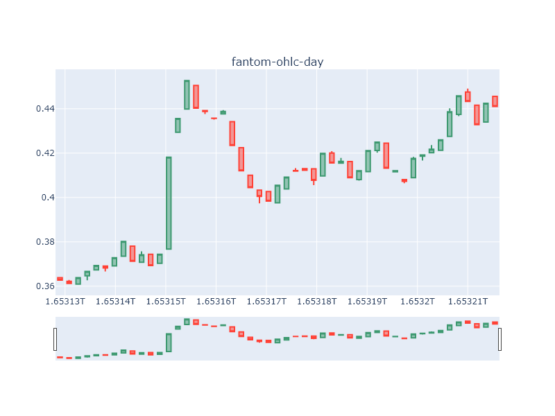
Month Plot:
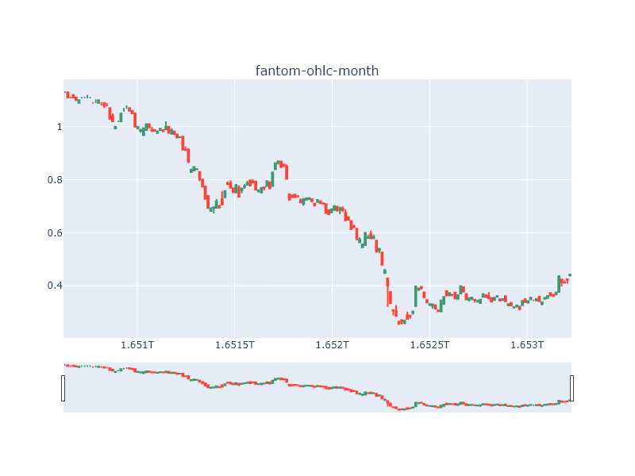
GREEN-SATOSHI-TOKEN
Name: STEPN Green Satoshi Token
STEPN Green Satoshi Token
Description:
What is Green Satoshi Token (GST)
GST is earned in STEPN, a Web3 lifestyle app with fun social elements and gamification design.
GST serves as the replacement to experience points and in-app currency. Users equipped with NFT Sneakers – walk, jog or run outdoors to earn GST, which can be used to level up and mint new Sneakers.
When should I buy Green Satoshi Tokens (GST)?
Players buy GSTs to spend/burn in the STEPN app. GSTs are minted by players through moving and leasing their NFT Sneakers, and burned through making progress in the social and gamification components. GST is different from GMT, which is the Governance Token of STEPN with a supply of 6 billion tokens.
What is STEPN?
STEPN is a Web3 lifestyle app with fun social elements and gamification design. Users equipped with NFT Sneakers – walk, jog or run outdoors to earn GST, which can be used to level up and mint new Sneakers.
Player can choose to lease or sell their NFT Sneakers on the in-app Marketplace; users’ GST earnings are stored in the in-app Wallet, which has a built-in Swap function.
Who is behind STEPN?
STEPN is created by Find Satoshi Lab, an Australian-based fintech studio. The team won the 2021 Solana Ignition Hackathon Gaming Track and is part of DeFi Alliance Gaming cohort.
Categories:
Solana Ecosystem, Play To Earn, Non-Fungible Tokens (NFT), Gaming, Binance Smart Chain Ecosystem
Public Notice:
Due to the price difference between BNB Chain and Solana, GST (BSC) page is set up to track the price on BSC. You may find GST page on BNB Chain <a href="https://www.coingecko.com/en/coins/green-satoshi-token-bsc">here</a>.
Links:
- Home Page: https://stepn.com/https://magiceden.io/marketplace/stepn
- Blockchain Site: https://explorer.solana.com/address/AFbX8oGjGpmVFywbVouvhQSRmiW2aR1mohfahi4Y2AdB,https://solscan.io/token/AFbX8oGjGpmVFywbVouvhQSRmiW2aR1mohfahi4Y2AdB,https://bscscan.com/token/0x4a2c860cec6471b9f5f5a336eb4f38bb21683c98,,,,,,,
- Official Forum URLs:
- Chat URLs: https://discord.com/invite/stepn
Social Media:
- Twitter: Stepnofficial
- Facebook:
- Telegram:
Sentiment:
- Votes Up: 63.15
- Votes Down: 36.85
Ranks:
- Market Cap Rank: 225
- Gecko Rank: 638
- Gecko Score: 26.012
- Community Score: 11.684
- Public Interest Score: 0.205
Day Plot:
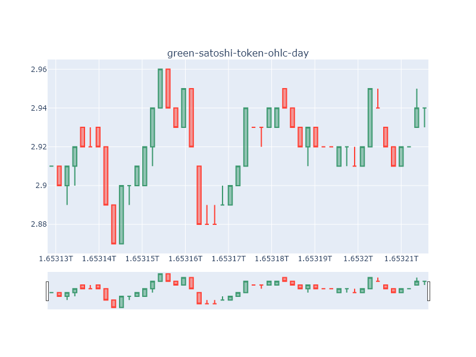
Month Plot:
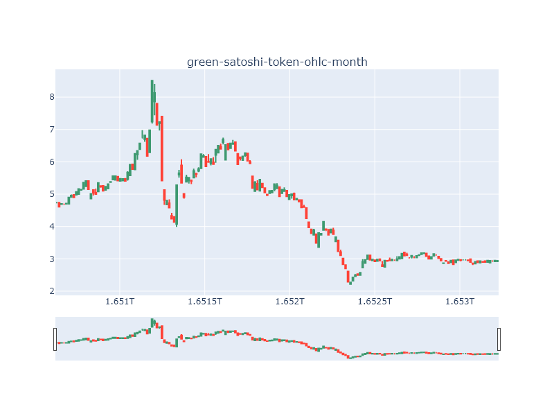
BABY-DOGE-COIN
Name: Baby Doge Coin
Baby Doge Coin
Description:
Baby Doge Coin is a meme cryptocurrency designed to be deflationary and more scarce over time. All holders of Baby Doge will earn more baby doge that is automatically sent to your wallet by simply holding Baby Doge coins in your wallet. Watch the amount of baby doge grow in your wallet as baby doge coin holders automatically receive a 5% fee from every on chain transaction that happens on the Baby Doge ecosystem. The community receives more baby doge coins from the fees generated each transaction.
Categories:
Meme Tokens, Binance Smart Chain Ecosystem
Public Notice:
Baby Doge Coin has recently expanded to Ethereum. For more info, read <a href="https://twitter.com/BabyDogeCoin/status/1461414579855101954?t=PnfdUuSZRg5gmBKex138sw&s=19">here</a>. Kindly note that there are multiple, distinct projects that share variations of the moniker "Baby Doge". Users are advised to DYOR.
Links:
- Home Page: https://babydogecoin.com/
- Blockchain Site: https://bscscan.com/token/0xc748673057861a797275cd8a068abb95a902e8de,https://etherscan.io/token/0xac57de9c1a09fec648e93eb98875b212db0d460b,https://ethplorer.io/address/0xac57de9c1a09fec648e93eb98875b212db0d460b,,,,,,,
- Official Forum URLs:
- Chat URLs: https://discord.com/invite/babydogecoin
Social Media:
- Twitter: babydogecoin
- Facebook:
- Telegram: babydogecoin
Sentiment:
- Votes Up: 92.88
- Votes Down: 7.12
Ranks:
- Market Cap Rank: 162
- Gecko Rank: 608
- Gecko Score: 26.376
- Community Score: 12.482
- Public Interest Score: 0.001
Day Plot:
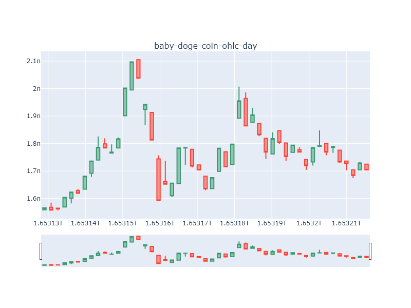
Month Plot:

CONSTITUTIONDAO
Name: ConstitutionDAO
ConstitutionDAO
Description:
Categories:
Public Notice:
None
Links:
- Home Page: https://www.constitutiondao.com/
- Blockchain Site: https://etherscan.io/token/0x7a58c0be72be218b41c608b7fe7c5bb630736c71,https://ethplorer.io/address/0x7a58c0be72be218b41c608b7fe7c5bb630736c71,,,,,,,,
- Official Forum URLs:
- Chat URLs: https://discord.com/invite/p2jdESeVfy
Social Media:
- Twitter: constitutiondao
- Facebook:
- Telegram:
Sentiment:
- Votes Up: 73.85
- Votes Down: 26.15
Ranks:
- Market Cap Rank: 209
- Gecko Rank: 443
- Gecko Score: 29.193
- Community Score: 9.867
- Public Interest Score: 0.003
Day Plot:
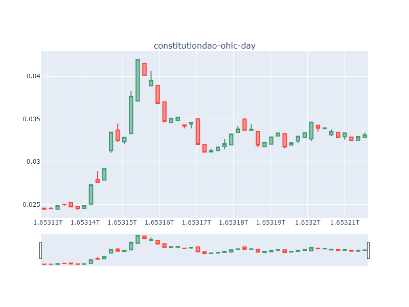
Month Plot:
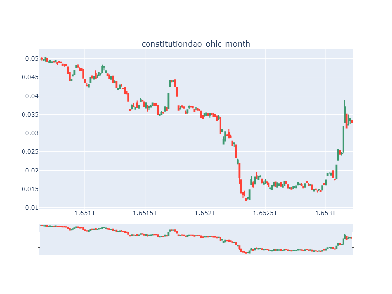
GODS-UNCHAINED
Name: Gods Unchained
Gods Unchained
Description:
GODS token is the currency used in the blockchain-based online trading card game, Gods Unchained. The token will act as a governance so players will be able to decide the development direction of the game. Players can also use the token to mint rare cards. Most importantly, the GODS token will be an integral part of the play to earn concept of the game.
Categories:
Play To Earn, Non-Fungible Tokens (NFT), Gaming
Public Notice:
None
Links:
- Home Page: https://godsunchained.com
- Blockchain Site: https://etherscan.io/token/0xccc8cb5229b0ac8069c51fd58367fd1e622afd97,https://ethplorer.io/address/0xccc8cb5229b0ac8069c51fd58367fd1e622afd97,,,,,,,,
- Official Forum URLs:
- Chat URLs: https://discord.com/invite/godsunchainedhttps://www.twitch.tv/godsunchained/videos
Social Media:
- Twitter: GodsUnchained
- Facebook:
- Telegram:
Sentiment:
- Votes Up: 75.71
- Votes Down: 24.29
Ranks:
- Market Cap Rank: 578
- Gecko Rank: 351
- Gecko Score: 31.889
- Community Score: 41.117
- Public Interest Score: 0.059
Day Plot:
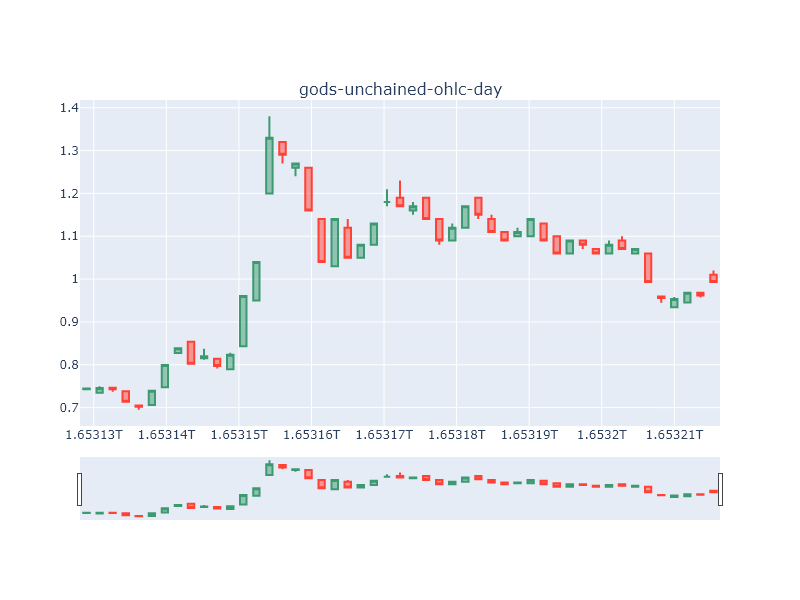
Month Plot:
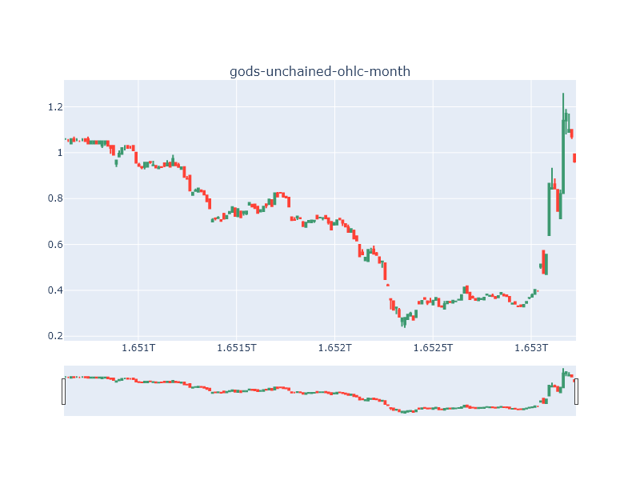